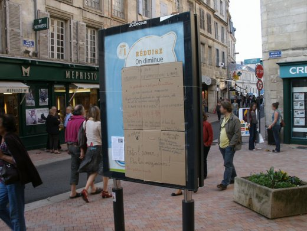
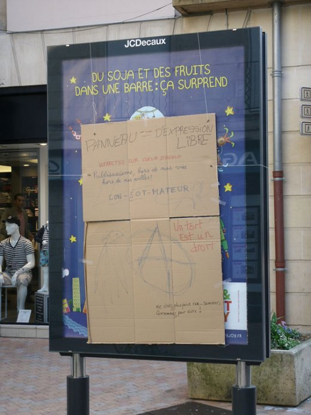

| |
Site dédié à la publication d'informations communiquées par le Collectif des déboulonneurs. En aucun cas ce site n'appelle à des actions illégales. | |
 |
||
|
Accueil du site > Poitiers > [Poitiers] Première action des Déboulonneurs Poitiers

Samedi 31 mars a eu lieu la première action du collectif des Déboulonneurs Poitiers. Au croisement de la rue du marché et de la rue de la cathédrale, la sucette publicitaire Decaux a été rhabillée avec des cartons. Les passant-e-s étaient invité-e-s à s’y exprimer avec des marqueurs de couleurs : slogans, bons mots et phrases rageuses ont fleuri sur cet espace temporairement libéré de la propagande marchande. Un petit concert de scie musicale a accompagné la déclamation de textes contre le totalitarisme publicitaire. Un tract a été distribué (1). Pas mal de gens se sont arrêtés pour écouter les textes et pour papoter. Les policiers sont passés plusieurs fois en mode surveillance, mais sans intervenir. Bref une petite action modeste mais fort réjouissante, qui en appelle d’autres à venir ! Texte du tract diffusé : STOP LA PUB !La publicité nous pollue à plusieurs niveaux. Elle dévore d’énormes quantités de papier, dont la récupération et le traitement sont essentiellement facturés aux contribuables. Elle est aussi très énergivore : un seul panneau publicitaire tournant équivaut à la consommation annuelle d’un foyer de quatre personnes ! La publicité nous harcèle pour nous faire rentrer dans le moule étouffant et uniformisant de la consommation, de l’ostentation et de la réussite. Dès le plus jeune âge, nul ne peut tenter de s’en extraire sans se sentir culpabilisé et marginalisé. L’un des exemples le plus frappant est l’image donnée des femmes, tenues d’être jeunes, minces, maquillées et richement parées. Comme aux Cordeliers, avec ce logo de « la Poitevine » rousse, consommatrice de l’enfance à l’âge adulte, pour « l’anniversaire » de laquelle des étudiantes distribuaient des tracts, revêtues de perruques rousses pour coller au « modèle ». La publicité inonde insidieusement nos lieux de vie, avec sa propagande héritée des régimes totalitaires, alors que l’espace public nous appartient de droit. La décision démocratique sur les emplacements voués à la publicité nous échappe complètement. La publicité n’est ni une culture , ni une expression libre : monopolisée par les diffuseurs et les riches, elle ne tolère aucun dialogue, elle répond par la répression à quiconque émet une critique contre le système qu’elle sous-tend. Les condamnations lourdes et répétées de militant-e-s antipub, obtenues à Poitiers par Decaux, démontrent bien que la publicité est une monopolisation violente de la (pseudo) liberté d’expression Elle n’est qu’une colonisation des esprits. La publicité n’est pas que le spectacle du capitalisme, elle en est la condition essentielle. La concurrence et la recherche du profit maximal supposent l’alignement de la demande sur une offre définie par un productivisme effréné, qui n’a plus aucun sens social. Cette société de fausse « abondance » implique qu’une minorité se gave, tandis que l’immense majorité tente de poursuivre un miroir aux alouettes, et qu’un milliard de personnes crèvent de faim et tentent de survivre au beau milieu de ses déchets. Sur Poitiers, la municipalité collabore à l’envahissement publicitaire, et prend fait et cause pour Decaux dans les procès qu’il intente aux militant-e-s antipub. Les panneaux d’affichage libre sont absents du centre-ville alors que les « sucettes » publicitaires et les panneaux lumineux y prolifèrent. « Coeur d’agglo » est typique d’un projet social où la population est considérée comme du bétail à tondre. La désobéissance civile , comme pour la lutte des faucheurs contre les OGM ou des salariés contre les licenciements, est un moyen de nous défendre et de défendre l’intérêt général. Par des actions antipub assumées et publiques, nous revendiquons avant tout le droit pour tou-te-s de se ressaisir de l’espace public, de lui redonner un sens plus solidaire et plus humain. Collectif des Déboulonneurs 86 
|
|
Site utilisant SPIP - Hébergement Ouvaton
|